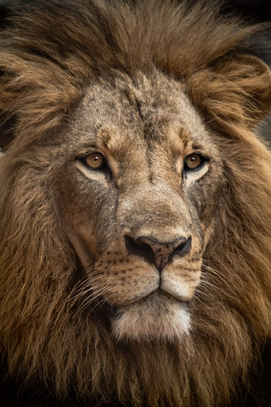
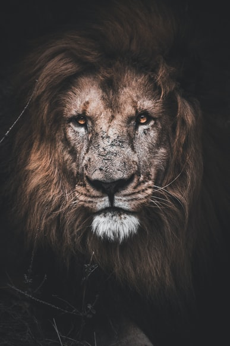

Leão-do-Atlas
Da família Panthera leoLeões que foram extintos na natureza no século XX. Poderiam ser encontrados no norte do continente africano, Egito e Marrocos.
É a maior espécie de leão que já passou pela face da terra, chegando a pesar mais de 300Kg.
Possuía uma juba negra que acobertava quase todo o seu corpo. O ser humano foi o responsável pela sua extinção com suas armas modernas.
No período romano, eram colocados para lutarem contra outras espécies, em especial, o tigre-do-cáspio, no qual resistia com bravura bem algumas regiões.
“Não acaba quando você perde, mas quando você desiste.”
- Descobrimento: 1758
- Tipo: Mamífero
- Idade média: 20 anos
- Macho adulto: 270 - 300Kg
- Fêmea adulta: 180 - 210Kg
- Família: Felídeos
Imagina-se que o último exemplar visto na natureza foi em 1922 no Marrocos, na região do monte Atlas. Fora dado como extinto desde essa última exibição. Entretanto, foram encontrados em cativeiros anos depois.
Com o descobrimento de descendentes dos leões-do-atlas no zoológico, porém hibridizados, criou esperança de resurgir essa espécie mais uma vez. Um projeto para recriar a espécie deu início, reproduzindo seus descendentes, foi em 2019 que os resultados vieram, nascendo 2 filhotes de leão-do-atlas na República Tcheca.